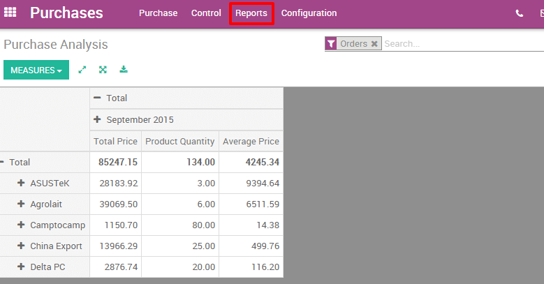
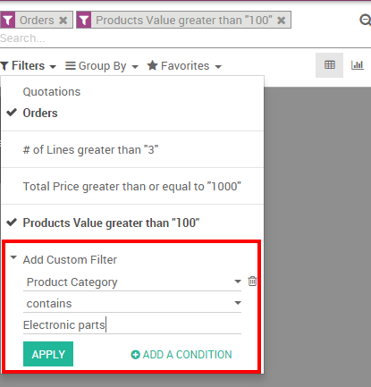

If your company regularly buys products from several suppliers, it would be useful to get statistics on your purchases. There are several reasons to track and analyze your vendor's performance :
- You can see how dependant from a supplier your company is;
- you can negotiate discounts on prices;
- You can check the average delivery time per supplier;
- Etc.
For example, an IT products reseller that issues dozens of purchase orders to several suppliers each week may want to measure for each product the total price paid for each vendor and the delivery delay. The insights gathered by the company will help it to better analyze, forecast and plan their future orders.
Configuration
Install the Purchase Management module
From the Apps menu, search and install the Purchase Management module.

Issue some purchase orders
Of course, in order to analyze your vendors' performance, you need to issue some Request For Quotations (RfQ) and confirm some Purchase Orders. If you want to know how to generate a purchase order, please read the documentation From purchase order to invoice and receptions.
Analyzing your vendors
Generate flexible reports
You have access to your vendors' performances on the Reports menu. By default, the report groups all your purchase orders on a pivot table by total price, product quantity and average price for the each month and for each supplier. Simply by accessing this basic report, you can get a quick overview of your actual performance. You can add a lot of extra data to your report by clicking on the Measures icon.
Tip
By clicking on the + and - icons, you can drill up and down your report in order to change the way your information is displayed. For example, if I want to see all the products bought for the current month, I need to click on the + icon on the vertical axis and then on "Products".
Depending on the data you want to highlight, you may need to display your reports in a more visual view. You can transform your report in just a click in 3 graph views : a Pie Chart, a Bar Chart and a Line Chart: These views are accessible through the icons highlighted on the screenshot below.

Note
On the contrary to the pivot table, a graph can only be computed with one dependent and one independent measure.
Customize reports
You can easily customize your purchase reports depending on your needs. To do so, use the Advanced search view located in the right hand side of your screen, by clicking on the magnifying glass icon at the end of the search bar button. This function allows you to highlight only selected data on your report. The filters option is very useful in order to display some categories of datas, while the Group by option improves the readability of your reports. Note that you can filter and group by any existing field, making your customization very flexible and powerful.
Tip
You can save and reuse any customized filter by clicking on Favorites from the Advanced search view and then on Save current search. The saved filter will then be accessible from the Favorites menu.